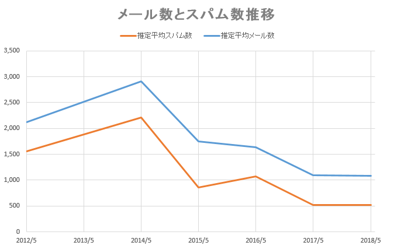

スパム対策お焚き上げ
- NSEG #101
- 2018/6/30
- さとうきよし
- @stealthinu
自己紹介
- 有限会社ジーワークス
- 長野県白馬村
- スキーしたかったから移住
- 17年くらい地方中規模ISP様の常駐仕事
どんな話？
- 題名は以前の@t_wada氏の発表
SQLアンチパターンのお焚き上げパクり - 以前自分が考案したスパム手法taRgreyのおさらい
- taRgreyの現在の状況ログからスパムの現状を読み解く
スパム対策についておさらい
- 2010年にNSEG #10で発表した資料を元におさらい
2010年当時のスパム現状
- スパム率70%～80%程度という感じで年々増えていた
- 97%前後がbotnetから出されたスパムだった
- 日本発のスパムはOP25Bにより激減していた
スパムはbotnetが主流だった
- スパムのうち97%前後がbotnetから出されていた
- ウイルス感染して遠隔操作可能にしたPCから出す
- 大半は海外の動的IPから送信
- 大量のメールを出すため再送やタイムアウト待ちしない
普通のメール送信

botnetからのスパム送信
日本語スパムはbotnet利用せず
- 中国、フィリピン、タイ等の半固定的IPから送信
- レンタルサーバや事務所に多数サーバを置く
- qmailやpostfixをそのまま利用
- またはWindows PCでスパム送信専用ツール利用
実際にやってた人の記事
- 迷惑メールを追う（上）【西日本新聞】
- 2018/2の記事でそこから10年ほど前の話
- 「出会い系サイト」誘導スパム
- 中国、欧州、南米、アフリカなどにメールサーバー千台以上分散して配置
- １日あたり２億通送信
- １億人に送った場合、返信があるのは千人ほど
- 返信に対してバイトが対応してポイントを購入させる
スパム対策手法を大きく3種に分類
- メール本文を解析するコンテンツフィルタ
- 送信者の「クセ」を利用したSMTPセッションフィルタ
- ネットワークでスパム送信自体を制限
メール本文を解析する
コンテンツフィルタ
- 主に本文の内容を解析して判定
- 主な例：ベイジアンフィルタ
- キーワードとその「スパムらしさ」を機械学習する
「バイアグラ」が含まれてるなら99%スパム
「出会い」「お金」が含まれてるなら95%スパム
などを積算して判定
SMTPセッションフィルタ
- SMTPセッション時の相手の「クセ」で判定
- S25R
「動的IPっぽい」逆引き名を拒否
例:evrtwa1-ar3-4-65-157-048.evrtwa1.dsl-verizon.net - greylisting 一時拒否して再送してきたら受け取る
スパムは到達性は求めないからわざわざ再送しない - tarpitting
SMTPセッションの返答を何10秒か待たせる
スパムは大量に送りたいので遅い相手は切る
greylistingによるスパムフィルタ
tarpittingによるスパムフィルタ
ネットワークで送信制限
- スパムを受け取らないのではなく出させない対策
- OP25B (Outbound Port 25 Blocking)
- ISPが自ネットワークから外向けSMTP接続を止める
- 日本では2005～2007年くらいに掛けて一気に普及
- これで日本発のスパムが劇的に減った
botnetからのスパム送信
OP25Bでの送信制限

taRgrey
- taRgreyはSMTPセッション情報でのフィルタを
複数組み合わせたフィルタ - S25Rで動的IPっぽいものだけ
- 返答の遅延を掛ける(120秒とか)
- その間に勝手にあきらめるのを待つ
- 同一IPから再送されてきたら遅延掛けずに通す
- 85%弱のスパムを排除していた
taRgreyフローチャート

taRgreyの目的
- taRgreyは誤検出や遅延がなるべく少なく
- 大部分のスパムを削減することが目的
- taRgreyだけでスパムを削除することは求めない
2010年当時の状況
| 率 | |
|---|---|
| スパム率 | 69% |
| S25Rのスパムマッチ率 | 93% |
| tarpitingでの駆除率 | 91% |
| taRgreyでの駆除率 | 85% |
ここから今の話
- ここ6年くらいのメールやスパムの状況
メール総数とスパム数
| アカウントあたり | 2014年まで | 2018年現在 |
|---|---|---|
| メール数 | 2,500通/月ほど | 1,000通/月弱 |
| スパム数 | 2,000通/月ほど | 500通/月ほど |

スパム率
- 2014年くらいまでずっと75%くらいだった
- その後徐々に低下し2018年には50%を切る
メール総数とハム数
- 正常なメール（ハム）は意外に減っていない

スパムは確実に減っている
- スパムはここ3,4年で大きく減っている
- 意外に普通のメール流量は減っていない
- どんなスパムが減ったのか？
怪しい接続元メール数大幅減
- S25Rに掛かる接続元は70%減程度に激減
- tarpittingで切断されたメール数も合わせて減少

tarpittingでの切断率大幅低下
- 2014年くらいまでずっと80%程度だった
- その後2018年には30%にまで急激に低下
フィルタ種での比較
- コンテンツフィルタは30%減程
- tarpittingは85％も激減
tarpittingの1次フィルタの効果
- 2015年頃まではずっと70%～80%維持
- 以降急激に低下しついに30%程度に

botnetからの送信が減った
- S25Rで引っ掛かるスパムが激減
- tarpittingの効果があるスパムも激減
- tarpittingを抜ける「通常のメールサーバ」からは微減
- つまりbotnetからのスパム送信が大幅に減った
submissionスパム
- botnetから送信認証させてスパム送信
- スパム側のOP25B対策
- ウイルス感染等で取得したアカウントを利用
- 2012年頃から
OP25Bでの送信制限
submissionスパム
submissionポートへの攻撃
- submissionポートへの認証アクセス急増
- アカウントクラックを狙ったもの
submissionスパム
実は「こっそり」送ってる
- クラックされたアカウントのログを解析
- せっかく盗ったアカウントを見つからないよう
ちょっとづつこっそり送る - 無茶な送り方をする「顧客」がいたときだけ見つかる
貴重なbotnetの資源を
スパムに割かなくなった
- メールより効果の高いSNSなどを狙う
- 低効率のスパムではなく
フィッシングなどより高効率なものに使う
taRgrey は オ ワ コ ン
滅 せ ぬ も の の あ る べ き か
SMTPセッションフィルタの終焉
- greylistingなども同じ
- botnetから送られなければ不要
- というかスパムがなければスパムフィルタは不要
- だから喜ぶべき話
スパム対策側は勝ったのか
- スパム対策が進みスパムの効果が少なくなった
- OP25B普及でスパムを出すことが難しくなった
- メール自体の価値が相対的に低下してしまった
(暗号化、詐称、添付ファイル、既読確認、など) - メールの価値低下はスパムの影響も大きい
- スパマーは他の「狩場」へ
まとめ
- taRgreyはもう導入する意味がない
- メールはまだ生きてるが死につつある
- しかしスパマーも去った